Chargement des données…

Dans de nombreux textes de loi en Suisse, des expressions telles que « s’adonnant à l’inconduite ou à la fainéantise », « alcoolique » ou en allemand « arbeitsscheu », « trunksüchtig », « liederlich » étaient les marqueurs qui permettaient de déclencher et de justifier une procédure d’internement administratif. Cette forme spécifique de mesure de contrainte à des fins d’assistance était un instrument utilisé par les autorités communales et cantonales pour éloigner des personnes dont le comportement s’écartait de la norme et les placer dans divers types d’institutions à des fins disciplinaires et de rééducation. Dans bien des cas, aucun tribunal cantonal n’était impliqué dans la procédure, si bien que ces internements décidés par la voie administrative ne respectaient pas le principe de la séparation des pouvoirs. À l’époque, l’idée était d’exclure ces personnes de la société, de les placer dans un environnement fermé où elles seraient rééduquées, puis de les réintégrer dans la société. Les communes et les cantons avaient développé différentes stratégies pour atteindre cet objectif de « préservation du corps social ». Comme il était coûteux d’ouvrir et de gérer des institutions telles que des prisons, des maisons de travail ou des établissements psychiatriques, tous les cantons ne voulaient pas – ou ne pouvaient pas – financer leurs propres établissements. Les autorités pouvaient donc interner des personnes dans les établissements d’autres cantons, contribuant ainsi à une meilleure utilisation des capacités disponibles. Ces réseaux cantonaux ont été l’une des principales raisons de l’apparition d’institutions multifonctionnelles accueillant sous un même toit aussi bien des détenus condamnés selon le droit pénal que des personnes internées sur décision administrative.
Img. 1.1 – Archives de l'Etat de Fribourg (AEF)/Staatsarchiv Freiburg (StAF), EB Div Photos 10 I, Bellechasse, Photographies aériennes de Bellechasse, 1948, Section 1, image 3 : «vue générale». [Photographe: Swissair Lufbild, Verlag O. Wyrsch, Wabern b. Bern]
Un des objectifs de la Commission indépendante d’experts (CIE) est de réaliser des études quantitatives sur le paysage des établissements en Suisse, afin de caractériser plus précisément les institutions et les autorités ayant ordonné des internements. Cette topographie des établissements a pu être reconstituée à partir de registres de 1933, des années 1940, de 1954, de 1965 et de 1980. Ces registres montrent l’emplacement des établissements, mais contiennent aussi des données sur leur but, leur capacité, et sur les autorités responsables. Lors du travail avec des sources historiques, il faut toujours garder à l’esprit qu’elles ont été établies par différents auteurs, avec différentes perspectives. Les données réunies ont été transférées dans des cartes et visualisations interactives à l’aide du DensityDesign Research Lab, afin d’approfondir la compréhension spatiale et temporelle de l’internement administratif.
La narration est développée sur quatre chapitres. On a d’abord une description et une mise en contexte des registres et de leurs différentes perspectives. Les données sont ensuite reportées sur des cartes, en combinant différents aspects comme le type d’établissement, la capacité ou la répartition des sexes. Dans le chapitre suivant, consacré aux corrélations, le libre choix de différentes variables permet de mieux caractériser les divers types d’institutions. Le dernier chapitre de la narration explique, en prenant l’exemple du canton de Fribourg et des établissements de Bellechasse, les mécanismes de l’internement administratif et dévoile le réseau qui existait entre les cantons. Chaque visualisation offre la possibilité de choisir librement différentes années de référence et catégories. Des informations supplémentaires apparaissent à mesure que l’utilisateur clique sur des éléments de la visualisation. On trouve encore un glossaire détaillé. Toutes les données brutes et la documentation pour chaque visualisation peuvent être téléchargées.
Toutes les données brutes et la documentation de chaque visualisation sont disponibles sur le portail opendata.swiss sous ce lien : opendata.swiss/fr/dataset/anstaltstopografie.
Sur ce portail, il est possible d’extraire les données suivantes :
Un glossaire des évènements et textes juridiques ainsi que des institutions répertoriées est également disponible :
Cette frise chronologique couvre la période allant de 1930 à 1980, sur laquelle reposent les considérations qui suivent. Y figurent quelques dates clés de l’histoire sociale de la Suisse, ainsi qu’un aperçu de l’évolution du cadre législatif et les sources utilisées. À l’aide de ces trois niveaux, les internements administratifs et les registres mentionnés peuvent être replacés dans leur contexte historique.
Le graphique présente des événements importants intervenus entre 1930 et 1990. Déplacez votre curseur de souris sur un événement pour visualiser un nom et une date. Cliquez dessus pour afficher de plus amples informations sur le panneau latéral.
Frise chronologique
Histoire sociale : L’introduction, à partir des années 1940, des dispositifs de sécurité sociale encore en vigueur aujourd’hui (AVS, AI, allocations familiales, assurance-chômage, etc.) et la ratification par la Suisse, en 1974, de la Convention européenne des droits de l’homme ont eu une grande influence sur les décisions des autorités puisqu’elles ont ouvert la voie à des solutions nouvelles pour gérer les risques individuels de pauvreté.
Bases légales : Quelles lois étaient déterminantes, au niveau fédéral ou cantonal, pour les internements administratifs ? On comprend ici l’influence qu’ont pu avoir les structures cantonales sur ces mesures de coercition à des fins d’assistance. On constate aussi, à lire les intitulés de ces lois, que le terme d’internement administratif n’est que rarement utilisé ; le plus souvent, des attributs de caractère sont utilisés (par ex. réfractaire au travail, débauché, ivrogne).
Cette section présente les sources et décrit leur qualité et leur pertinence. Ces visualisations se fondent sur cinq registres des établissements et institutions de l’exécution des peines et des mesures. Ces sources datent de différentes époques et sont de différents auteurs. Ce qu’elles ont toutes en commun, c’est de concerner l’ensemble de la Suisse et d’être très détaillées ; elles ont aussi toutes, en leur temps, servi d’aide et de référence aux autorités d’internement.
Le graphique présente les institutions étudiées et leur statut année par année. Faites défiler vers le bas pour passer de la représentation en mosaïque à un diagramme de sankey. Cliquez sur un bloc ou un flux pour afficher la liste des autres institutions du groupe correspondant dans le panneau latéral.
Elles se distinguent cependant les unes des autres par leur perspective, et ainsi par leur pertinence. Trois des registres contenaient toutes les informations nécessaires pour créer les visualisations (1954, 1965, 1980). Pour les deux autres (1933, 1940), nous avons dû recourir à d’autres sources pour obtenir un niveau d’information comparable. Les hospices de pauvres n’apparaissent que dans la source la plus ancienne, tandis que la source la plus récente mentionne principalement les prisons. Cette différence est révélatrice d’une des faiblesses de ces registres, car les hospices de pauvres, par exemple, étaient déterminants pour la pauvreté des personnes âgées et pour les décisions d’internement visant des personnes âgées.
Registres et institutions
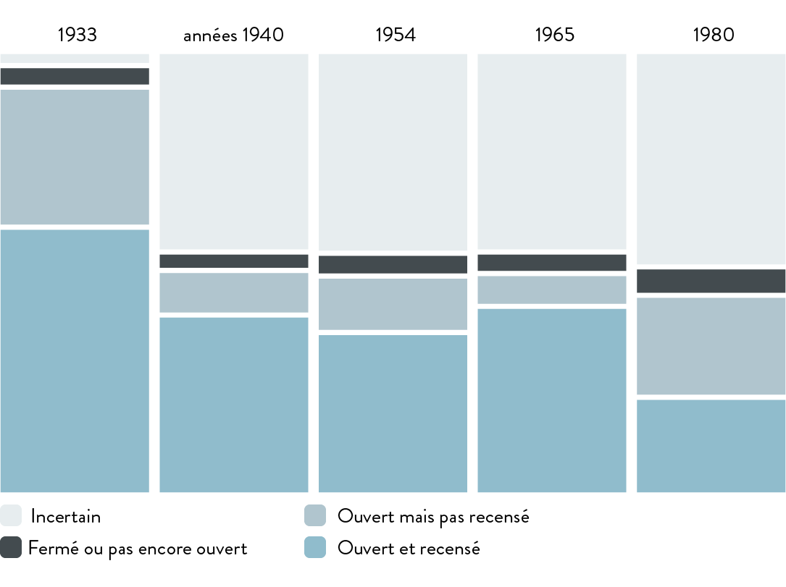En plus du diagramme mosaïque déjà décrit, le diagramme de Sankey qui suit expose ce changement de perspective entre les années de référence. Ce sont au total 648 institutions qui sont mentionnées dans ces registres, mais elles n’apparaissent pas forcément dans chaque enquête (chaque répertoire). Combien d’institutions étaient en fonction mais n’ont pas été prises en considération dans les enquêtes par les différents auteurs (angles morts) ? Certains établissements ont par ailleurs été fermés pendant cette période, d’autres ont été ouverts.
Registres et institutions
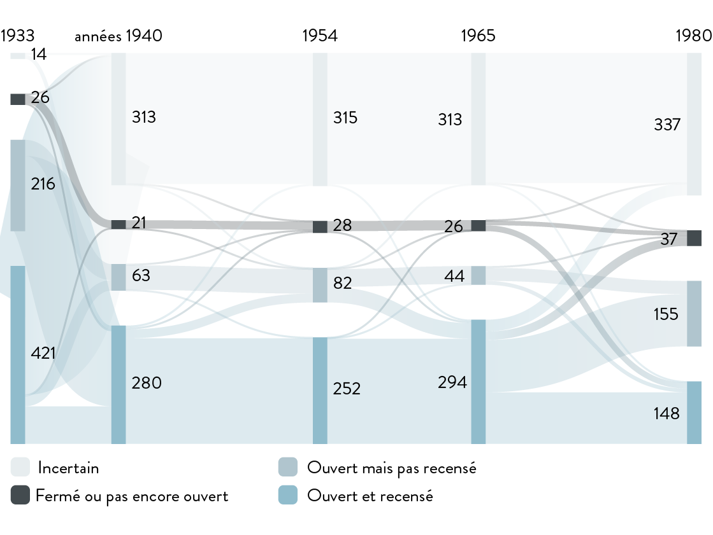Les institutions ont accueilli des personnes internées pour différents motifs (droit pénal, droit civil, internements administratifs / lois cantonales sur l’internement). Les établissements de Bellechasse sont typiques à cet égard : le complexe de Bellechasse comprenait une prison, un « asile pour le relèvement des buveurs » et un établissement d’éducation au travail.
Dans le graphique précédent, les institutions sont regroupées en fonction du nombre de différents types d’individus qu’elles reçoivent. Déplacez votre curseur de souris sur un élément pour afficher le nom et la localisation de l’institution. Cliquez sur un élément pour afficher plus informations sur le panneau latéral, notamment les typologies. Sélectionnez une période en modifiant les années au moyen du menu au-dessus de la visualisation. Passez le curseur de la souris sur les légendes pour mettre en évidence les éléments correspondants.
Buts et typologie des institutions en 1954
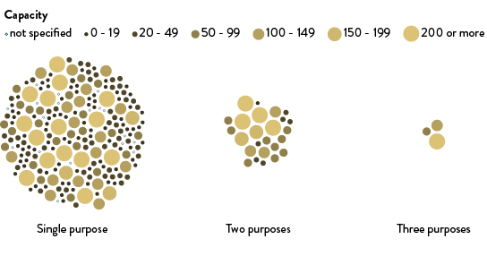Visualisation 1.3 – Buts et typologie des institutions
Open in a separate window
Cette carte propose une vue d’ensemble des 648 établissements qui apparaissent dans les sources pour la période considérée. On observe des concentrations et des « zones blanches » dans la distribution géographique. Par exemple en 19541954, la plupart des institutions mentionnées dans les registres sont réparties sur le plateau. On voit avec l’année de référence suivantel’année de référence suivante que de nombreuses institutions se trouvent dans les centres urbains comme Zurich, Bâle, Berne et Genève, mais aussi dans des régions plutôt rurales comme le Seeland.
La carte ci-contre montre toutes les institutions, tous types confondus. Déplacez votre curseur de souris sur un élément pour afficher le nom et la localisation de l’institution. Cliquez sur un élément pour afficher plus informations sur le panneau latéral. Sélectionnez une période en modifiant les années au moyen du menu au-dessus de la visualisation.
Localisation des institutions
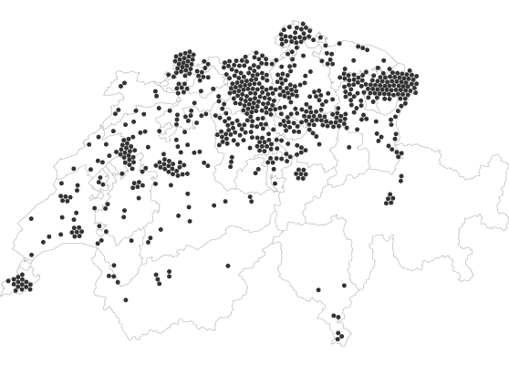Les types d’établissements suivants existaient en Suisse : établissements de travaux forcés, colonies pénitentiaires, établissements d’éducation pour jeunes adultes, établissements pour alcooliques, établissements pénitentiaires, établissements psychiatriques, hospices communaux pour les pauvres (uniquement dans la source de 19331933) et établissements pour personnes ayant des besoins spéciaux. Dans tous ces établissements, des personnes ont été internées sur décision administrative. Si l’on observe l’année 19651965, on constate que les prisons sont réparties assez régulièrement sur l’ensemble du territoire, ce qui s’explique par le fait que chaque district ou arrondissement avait son propre établissement. En revanche, les établissements d’éducation se trouvent principalement dans les régions rurales. Certains établissements de travaux forcés ont été installés sur d’anciens marécages (zones d’améliorations foncières) dans des plaines comme le Seeland (Établissements de Bellechasse, Établissements de Witzwil, St. Johannsen, foyer de travail du Tannenhof) ou dans la plaine de l’Orbe (Établissements de la Plaine de l'Orbe).
Les institutions sont réparties sur 8 différentes cartes selon leur type. Cliquez sur une typologie pour agrandir la carte correspondante, puis positionnez le curseur de la souris ou cliquez pour afficher de plus amples informations.
Répartition par type d’établissement
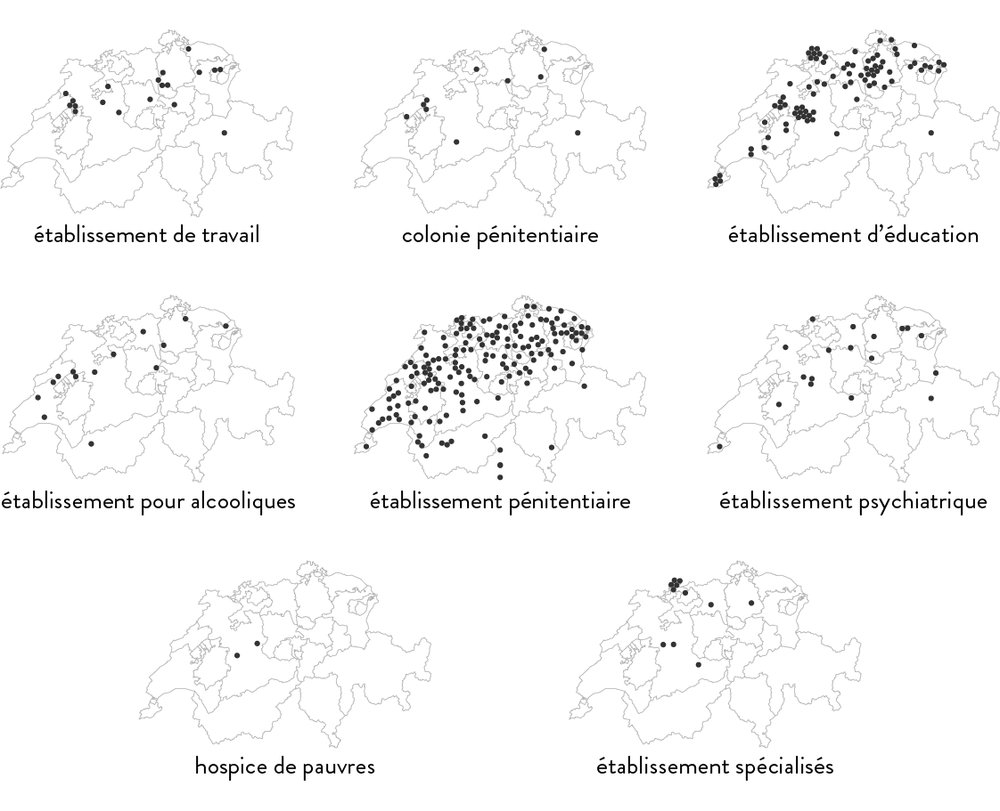Visualisation 2.2 – Localisation des institutions selon leur typologie
Open in a separate window
Cette carte montre de combien de places disposaient les différents établissements de l’exécution des peines et des mesures. Ici aussi, on constate toute l’étendue de la gamme, depuis les petits établissements de 19 places jusqu’aux grandes institutions accueillant 150 ou 200 personnes.
La carte présente les institutions selon leur capacité. Positionnez le curseur de la souris ou cliquez sur un élément pour afficher de plus amples informations. Passez le curseur sur les légendes pour mettre en évidence les éléments correspondants.
Si l’on observe, pour l’année 19541954, uniquement les établissements de travail forcé, les colonies pénitentiaires et les établissements d’éducation, on constate que presque un cinquième du total des places disponibles en Suisse se concentrent dans cinq institutions du Seeland : Bellechasse, Witzwil, le foyer de travail du Tannenhof, St. Johannsen et le Staatliches Erziehungsheim für Knaben à Cerlier. Ces établissements comptaient 1520 places, sur un total en Suisse estimé à 9000. Un grand nombre des personnes internées étaient contraintes de travailler aux champs, apportant ainsi une contribution essentielle au revenu des établissements. Aujourd’hui encore, Witzwil et Bellechasse comptent parmi les plus grands producteurs de produits agricoles de Suisse.
Localisation des institutions selon leur capacité en 1954
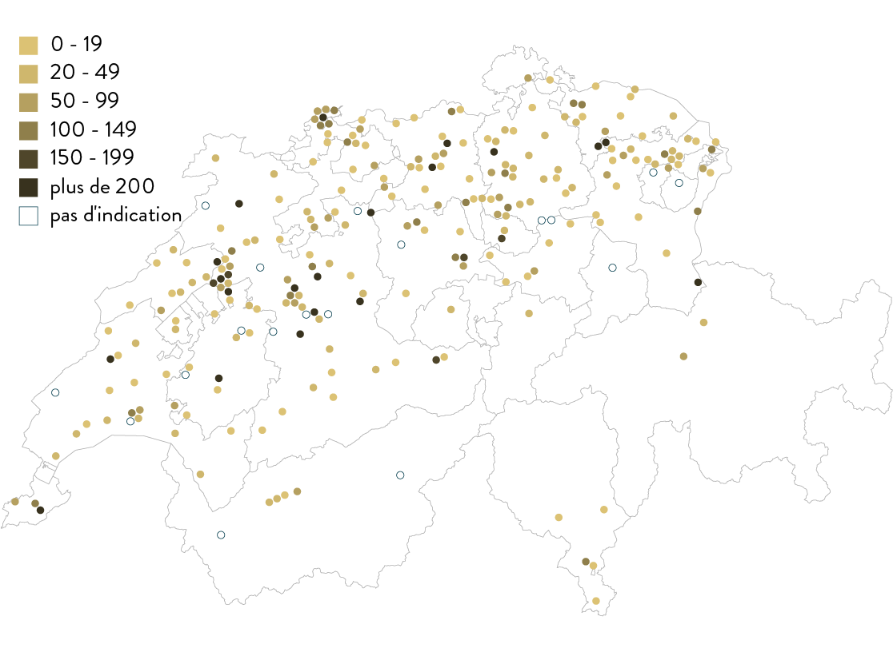Visualisation 2.3 – Localisation des institutions selon leur capacité
Open in a separate window
La confession et le sexe étaient deux des principaux critères pour déterminer la place attribuée à une personne dans une institution. Certains établissements étaient catholiques, d’autres, protestants, d’autres encore, interconfessionnels. Pour les hospices destinés aux pauvres, l’orientation confessionnelle était souvent peu claire. Les institutions interconfessionnelles étaient le plus souvent en mains publiques et comptaient de nombreuses places, tandis que les institutions catholiques ou protestantes étaient en mains privées et de capacité plus restreinte.
La carte présente les institutions selon la confession religieuse. Positionnez le curseur de la souris ou cliquez sur un élément pour afficher de plus amples informations.
Pour l’année 19651965, par exemple, 84 % des institutions étaient interconfessionnelles (pour la plupart, des prisons de district), 11 % étaient catholiques et 5 %, protestantes. Les établissements d’éducation étaient le plus souvent de l’une ou l’autre confession. On trouve ainsi parmi les catholiques le Schweizerisches Mädchenheim à Richterswil, le Kinderdörfli à Rathausen et l’Institut Bon Pasteur à Lully. Pour les protestantes, on peut citer le Mütter- und Kinderheim à Lausen, le Landheim Brüttisellen à Bassersdorf et le Gemeinnütziges Erziehungsheim Schloss Kasteln à Oberflachs.
Répartition par confession des personnes internées
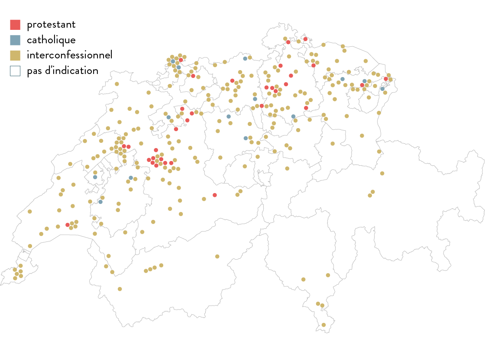Visualisation 2.4 – Localisation des institutions selon la confession religieuse
Open in a separate window
Le sexe des personnes internées était un autre critère important pour le choix d’un établissement. Si l’on reste sur l’année 19651965, on constate que 59 % des établissements étaient mixtes, tandis que 27 % étaient exclusivement réservés aux hommes et 14 %, aux femmes. Là encore, les prisons de district formaient le plus gros contingent de places destinées aux deux sexes. Si l’on exclut les prisons de district, on a environ une moitié de places destinées aux hommes, le reste se partageant à part à peu près égales entre places réservées aux femmes et places mixtes.
La carte présente les institutions selon leur spécificité de genre. Positionnez le curseur de la souris ou cliquez sur un élément pour afficher de plus amples informations.
Localisation des institutions selon le genre en 1965
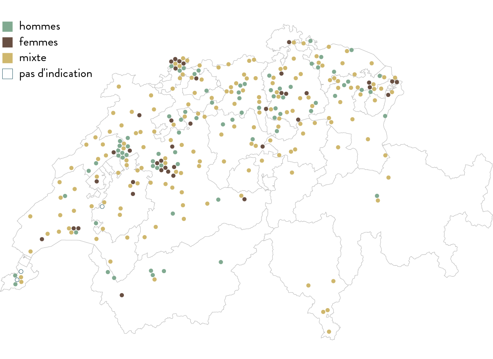Visualisation 2.5 – Localisation des institutions selon le genre
Open in a separate window
Cette visualisation permet de relier entre eux différents facteurs des sources et de déterminer leur fréquence : plus le point est gros, plus le nombre d’institutions présentant la même combinaison est élevé. L’observation faite précédemment selon laquelle les prisons de district accueillaient en principe les deux sexes selon laquelle les prisons de district accueillaient en principe les deux sexes, peut aussi être vérifiée ici avec la taille du point en sélectionnant les critères « sexe » et « type ». À l’inverse, les prisons destinées exclusivement aux femmes sont l’exception.
Ce n’est que dans les établissements de type « foyer d’éducation » qu’on a un nombre équivalent de placements pour les deux sexes. Les décisions administratives de placement dans ces établissements concernaient en général des jeunes entre seize et vingt ans. Le nom des établissements révèle déjà implicitement le but que la société se proposait d’y atteindre par un internement. La Maison d'éducation Bellevue et l’« Anstalt für gefährdete Mädchen Bern-Brunnadern » ont ainsi vocation à remettre les jeunes filles et les jeunes femmes sur le chemin de la vertu, tandis que l’« Arbeitsanstalt Kreckelhof Herisau » ou le « Landerziehungsheim Albisbrunnen » se proposent de rééduquer par le travail les jeunes hommes qu’ils accueillent. La rééducation par le travail visait principalement les hommes, de sorte qu’il n’y avait pas d’équivalent des colonies pénitentiaires pour une population féminine, ou que les établissements de travail forcé destinés spécifiquement aux femmes, tels l’« Arbeits- und Strafanstalt Hindelbank » ou le « Frauenheim Ulmenhof », constituaient une exception.
Matrice de corrélation: sexe des détenus et types d'installations
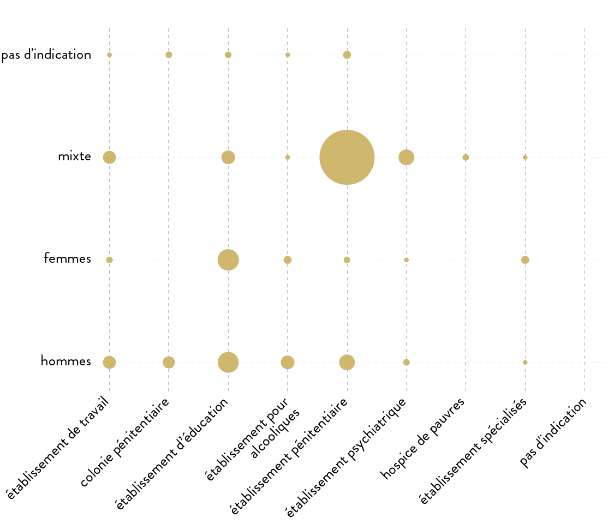À la sortie de ce chapitre, la visualisation montre en marge les catégories d’autorités impliquées dans l’internement administrativles catégories d’autorités impliquées dans l’internement administrativ et qui avaient le pouvoir de décider d’un placement. On trouve parmi ce large spectre d’autorités des autorités administratives cantonales, la police, le tuteur général, l’hospice général, etc. Les responsables pouvaient varier d’un canton à l’autre et de cas en cas. Cette diversité des situations illustre en définitive le flou qui régnait concernant les motifs justifiant un internement administratif.
Matrice de corrélation: autorités administratives et types d'installations
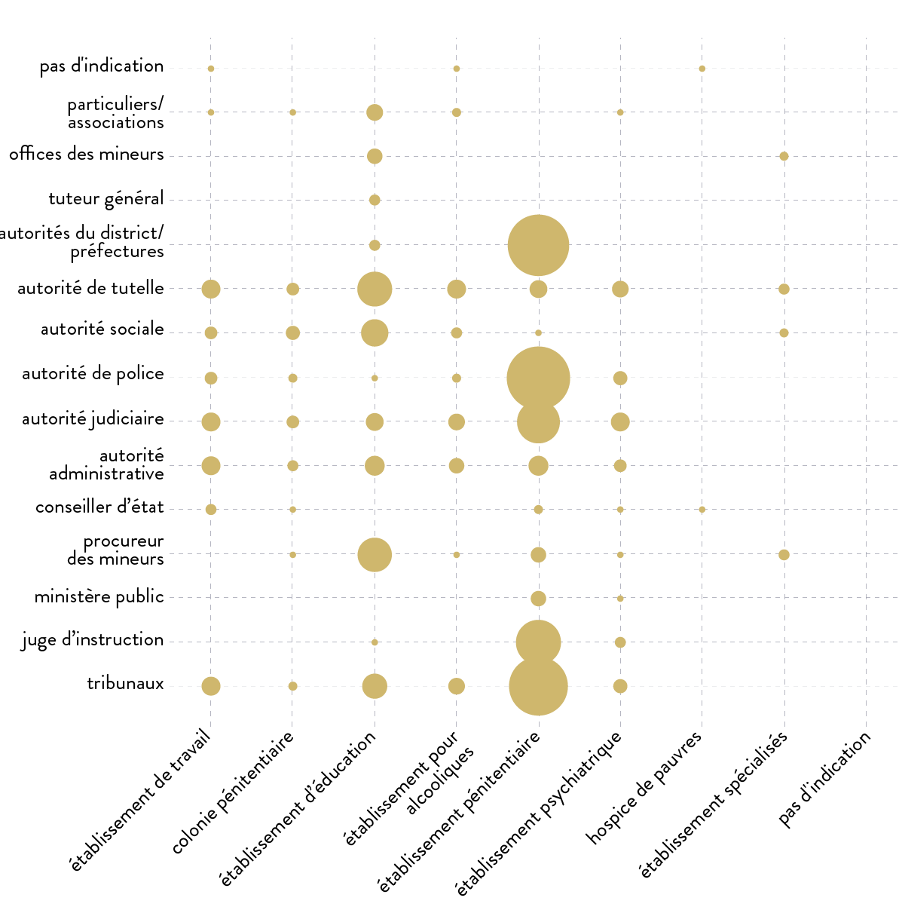
Bien d’autres combinaisons peuvent être explorées, par exemple :
Une comparaison entre capacités et types d’institution
Une comparaison entre capacités et confessions religieuses
Au moyen de ce graphique, il est possible de comparer librement entre elles toutes les spécificités des institutions. Utilisez le menu déroulant au-dessus pour les sélectionner. Cliquez sur un cercle pour afficher la liste des institutions correspondantes. Sélectionnez une période en modifiant les années au moyen du menu au-dessus de la visualisation.
L’internement administratif reposait en Suisse sur un réseau complexe et hétérogène de lois cantonales et sur le code civil suisse. Chaque canton développait ses propres procédures et désignait des autorités compétentes au niveau local, régional ou cantonal. Le chemin vers l’internement administratif prenait ainsi différentes voies.

Img. 4.1 – Archives de l'Etat de Fribourg (AEF)/Staatsarchiv Freiburg (StAF), EB Div Photos 13, Bellechasse, Ancienne colonie, maison de rééducation au travail, 20-21 janvier 1938, Section V, image 1 : «Dalle des combles».
Dans le canton de Fribourg, par exemple, comme indiqué dans les articles 30 à 43 de la Loi sur l"assistance from July 17th 1951, c’étaient les préfets, en tant que représentants de l’administration cantonale dans les districts, qui avaient le dernier mot sur les différentes procédures d’internement. Les critères formels auxquels devait répondre l’internement administratif étaient peu nombreux et les procédures, souvent expéditives. Le préfet dirigeait l’enquête, en s’appuyant souvent sur les déclarations de la police ou d’autres autorités. Il prenait ensuite sa décision seul. Le droit de l’intéressé d’être entendu, ainsi que son droit de recours, étaient réduits au strict minimum. Ont été internés à Bellechasse des citoyens fribourgeois, mais aussi des ressortissants d’autres cantons, sur la base d’accords intercantonaux. Ce réseau tissé entre les cantons est reconstitué au chapitre suivant.
Cette visualisation montre quels cantons collaboraient pour la mise en œuvre des internements administratifs (par exemple quels cantons internaient des personnes à Bellechasse dans le canton de Fribourg). Dans certains cas, les sources ne permettent pas de déterminer dans quelles institutions en dehors du canton les personnes étaient envoyées – ces cas portent la mention « inconnu » dans la visualisation. Un autre élément intéressant de cette représentation est qu’elle montre des relations entre les cantons qui sont plus anciennes que les concordats d’exécution des peines, et qui ne suivent pas forcément les mêmes lignes. Ces accords intercantonaux permettaient à des cantons qui ne disposaient pas de leur infrastructure propre (par ex. Nidwald), de néanmoins prononcer des internements administratifs.
Le graphique ci-dessous présente les échanges de détenus entre cantons. Cliquez sur un cercle pour mettre en évidence les échanges dans lesquels un canton spécifique a été impliqué. Double-cliquez pour afficher la liste des institutions concernées.
Réseau intercantonal
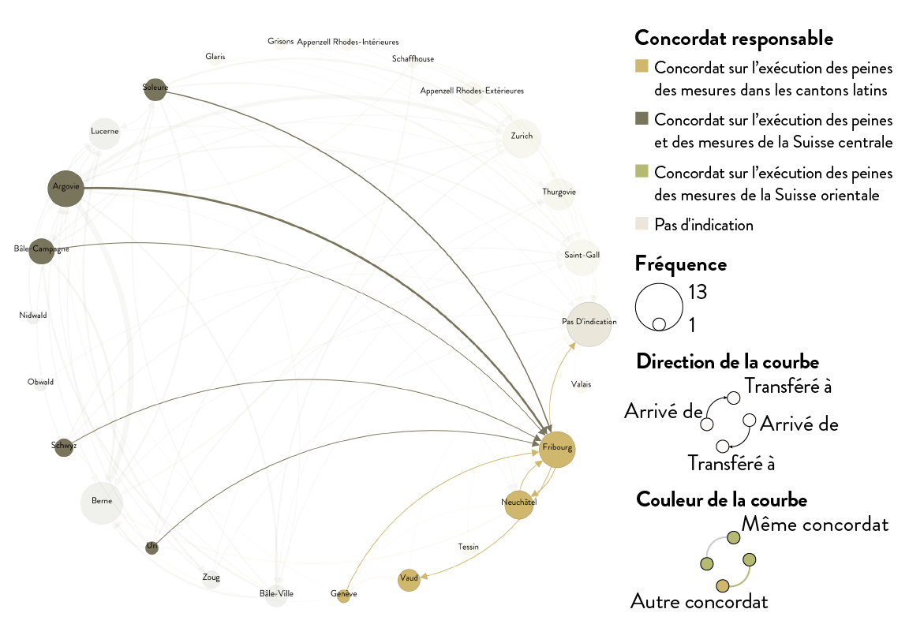La carte montre les rapports entre les cantons d’origine et de destination. En sélectionnant un canton, on voit avec quels autres cantons il avait des liens. Sont aussi montrés les établissements spécifiques utilisés par les autorités extra-cantonales pour des internements.
En 1954, on trouvait sur le territoire du canton de Fribourg les deux grandes institutions que sont les Établissements psychiatriques de Marsens et les Établissements de Bellechasse, les deux instituts catholiques Bon Pasteur, réservés aux filles, à Lully et à Villars-les-Joncs, ainsi que l’Institut Saint-Nicolas, aussi catholique, mais accueillant filles et garçons. Il arrivait cependant que des personnes soient envoyées en détention administrative dans des établissements d’autres cantons : des jeunes femmes à la Maison d’éducation Bellevue, dans le canton de Neuchâtel, et des jeunes hommes à l’Institut romand d’éducation, dans le canton de Vaud.
Institutions hôtes à Fribourg en 1954
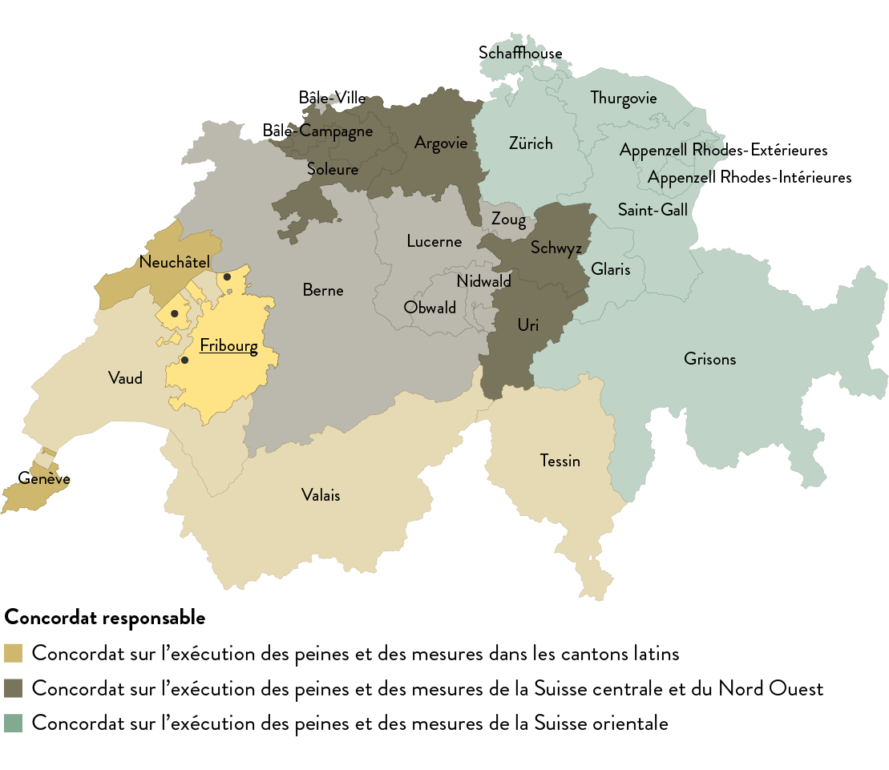Dans le canton de Genève, qui disposait d’un établissement psychiatrique, d’une prison et d’un foyer destiné aux hommes, la situation est différente : Genève envoyait des personnes en détention administrative non seulement dans le canton de Vaud voisin, mais aussi dans les cantons plus lointains de Berne (Kantonale Zwangserziehungsanstalt Tessenberg) et d’Argovie (Staatliche Zwangserziehungsanstalt Aarburg). Ces deux établissements étaient réservés aux jeunes hommes, tandis que la Colonie pénitentiaire de Rolle et la Maison d’éducation Bellevue étaient destinées à l’éducation des jeunes femmes. Le canton de Genève utilisait ainsi ce réseau intercantonal dans le domaine de la rééducation ou de l’exécution des peines et des mesures (par ex. dans les Établissements de Bellechasse).
La carte présente les relations d’échange entre un canton sélectionné et toutes les institutions externes. Une relation existe si des détenus étaient envoyés d’un canton vers une institution hors de celui-ci, mais malheureusement, nous ne connaissons pas l’ampleur du phénomène, soit le nombre de personnes placées de force hors de leur canton. Si une relation est représentée, cela signifie qu’il y a eu au minimum un échange.
Cliquez sur un canton pour afficher les institutions concernées.
Utilisez le menu au-dessus de la carte pour passer des institutions où sont envoyés les détenus d’un canton en particulier à une institution spécifique qui reçoit les détenus d’autres cantons.
Sélectionnez une période en modifiant les années ou cliquez sur un cercle pour afficher de plus amples informations dans le panneau latéral.
Concordat sur l’exécution des peines et des mesures dans les cantons latins
Concordat sur l’exécution des peines et des mesures de la Suisse orientale
Concordat sur l’exécution des peines et des mesures de la Suisse centrale et du Nord Ouest
Accueillant des personnes
Autres instituts
À quelles conditions les personnes internées sur décision administrative pouvaient-elles quitter l’institution où elles étaient retenues ? À quel moment le but d’éducation (ou de rééducation) allégué pour l’internement était-il considéré comme atteint ? Qui décidait à quel moment une personne pouvait être relâchée ? Une personne internée sur décision administrative était-elle libre dès lors qu’elle se retrouvait en dehors des murs de l’établissement ? Tels sont les questions auxquelles se consacre le chapitre sur les pratiques en matière de libération.
Une libération pouvait être définitive, mais aussi conditionnelle. Dans les années 1920, par exemple, une libération anticipée de la Sapinière, la « maison de travail pour buveurs » qui faisait partie des Établissements de Bellechasse, dans le canton de Fribourg, relevait dans les faits de la compétence exclusive du directeur de l’établissement. C’est son expertise qui était déterminante pour évaluer si la personne internée s’était « amendée » de façon satisfaisante.

Img. 4.2 – Archives de l'Etat de Fribourg (AEF)/Staatsarchiv Freiburg (StAF), EB Div Photos 10 II, Bellechasse, « Photographie aérienne de Bellechasse », 1956-1972. [Photographe: B. Bachmann, Bern]
La pression était dès lors forte sur les personnes internées pour s’adapter et se conformer à ce que l’on attendait d’elles en termes de travail et de comportement. Pour une libération conditionnelle, étape intermédiaire entre l’internement et la liberté complète, l’intéressé devait par exemple s’engager à ne pas fréquenter de débits de boissons ou à s’abstenir de consommer de l’alcool pendant une période probatoire. Cette pratique n’était pas exclusive aux Établissements de Bellechasse, ni aux années 1920. La personne libérée était surveillée par les autorités communales ou par des employés du service de probation. Un comportement non conforme pendant la période de probation pouvait entraîner le retour dans l’établissement. Les internements à répétition de nombreuses personnes montrent à quel point il était difficile de se soustraire à ces mécanismes de contrôle.
Plus de 640 institutions ont été utilisées par un grand nombre de responsables cantonaux, communaux ou privés, entre 1930 et 1980, pour interner des personnes sur décision administrative. Les sources évaluées concernaient différents types d’établissements, avec des repères géographiques et chronologiques. La mise en évidence des relations entre les autorités et les institutions correspondantes dans les cantons voisins permet de reconstituer un réseau qui dépasse les frontières cantonales et administratives – les Établissements de Bellechasse sont ici un exemple parlant. Ces interactions multilatérales au niveau cantonal ont commencé avant la conclusion des concordats d’exécution des peines entre les années 1960 et le milieu des années 1970 (concordats qui ont déterminé certains établissements clés pour l’accueil de détenus des cantons parties).
Pour la première fois, les repères institutionnels ont pu être identifiés pour l’ensemble de la Suisse, caractérisés plus précisément et placés sur une carte. Le glossaire documente en détail, mais pas complètement, la multitude des bases légales cantonales et les caractéristiques des établissements. L’approche quantitative de cette mesure spécifique de coercition à des fins d’assistance permet d’arriver à une connaissance plus profonde de la composition de cette topographie des établissements, de son développement et de son fonctionnement. Les visualisations illustrent aussi le processus de travail, partant des données brutes issues des sources historiques pour arriver aux premiers résultats, desquels découlent de nouvelles questions. La réponse à ces nouvelles questions se trouvera dans les publications de la Commission indépendante d’experts.

Img. 4.3 – Archives de l'Etat de Fribourg (AEF)/Staatsarchiv Freiburg (StAF), EB Div Photos 24, Bellechasse, « un groupe d'assistés », 1920-1930. [Photographe: Simon Glasson, Bulle]
Le « Paysage institutionnel suisse 1933-1980 » est un projet conçu et développé par la Commission indépendante d’experts (CIE) et le DensityDesign Research Lab (DD): Andrea Benedetti (DD), Paolo Ciuccarelli (DD), Marco Dal Molin (CIE), Tommaso Elli (DD), Ernst Guggisberg (CIE), Michele Invernizzi (DD), Michele Mauri (DD), Joséphine Métraux (CIE)
Collecte et analyse des données: Marco Dal Molin, Ernst Guggisberg, Deborah Morat
Textes: Marco Dal Molin, Nicole Gönitzer, Ernst Guggisberg, Mirjam Häsler, Matthieu Lavoyer, Joséphine Métraux